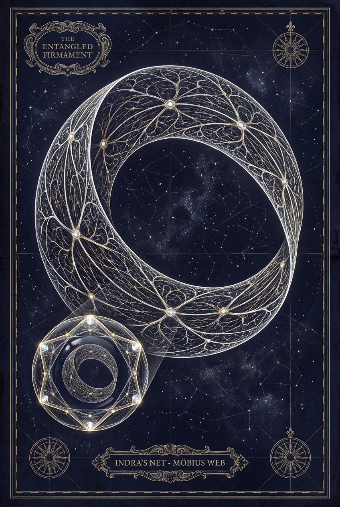

Part VII
Chapter 38: Living from the Void
Estimated reading time: 10 min
The journey into the Void returns to the world—more intimate, more honest, more awake.
The question is no longer only what you touched there, but what that spaciousness makes possible in the world: how you time a boundary, answer a message, face rupture honestly, and stay present inside the ordinary.
The anchor for that return is the Serene Center—grounded enough that vastness can pass through without carrying you away.
Voltage: High Intensity
The return is part of the threshold. Give the nervous system aftercare, and let ordinary life test what was real.
Less choice, diminished relational capacity, or difficulty re-grounding after Void contact is the signal to set advanced work aside. Return to Foundational grounding and turn to experienced, grounded support.
It is where infinite depth has to learn the manners of a finite life.
The Void loosens the knots between event, meaning, identity, and response. What happened still matters. The body still remembers. Consequences remain. But the story no longer has total authority over the next movement. The points are still there; they no longer have to become the old constellation.
This is the gift of spaciousness: not escape from action, but wider agency within action. More room before reaction. More choice inside relationship. Better timing when force rises. More tenderness without collapse. Between stimulus and script, wound and reply, longing and grasping, an interval opens.
Let this unfold at the cadence your body can trust. Finite body, infinite depth: one ordinary life asked to hold both.

Living from the Void
Return, Ethics, Ordinary Life
Serene Center
Feet, breath, a clear yes/no.
The anchor for return is grounded enough that vastness can pass through without carrying you away.
Boundary
"I can do Friday; tonight I'm at capacity."
The quieter center gives you a cleaner yes, no, or not yet.
Repair
"I’m sorry for my tone. Can we restart?"
True contact sharpens repair, consequence, and relational honesty.
Oneness Shadow
Unity never negates sovereignty.
If non-duality makes you less choiceful, less relational, or less empathetic, pause advanced work and return to grounding.
These are not rituals of elevation. They are proofs of return.
Let ordinary life test what was real: timing, boundary, repair, and one coherent action.
Daily Proof of Return
To live from the Void is to let contact alter timing, boundary, and conduct under ordinary conditions.
Each inhale promises another. Each exhale reminds you that you are one breath closer to the last. Feel each inhale as the kiss of life from within, and each exhale as the gift of love returned.
In daily life, this usually comes back to a handful of ordinary moves:
- Re-enter through the body: Eat, walk, rest, and let the nervous system catch up before deciding what the experience meant.
- Let boundaries clarify: Notice where the quieter center gives you a more exact yes, no, or not yet.
- Make one honest translation: Put the contact into one conversation, one refusal, one repair, one goodbye, or one decision.
- Give it a form: Art, writing, music, or craft can carry what is too large to stay abstract.
- Keep one touchstone: A single cue is enough if it actually returns you.
In ordinary life, that might mean:
- Someone asks more from you when you are already full, and you feel your feet and say, “I can do Friday; tonight I need to rest.”
- Warm water runs over your hands and becomes a touchstone: skin, soap, breath, the infinite inside a simple act.
- The canvas looks loud and you feel small, so you place one slow line of charcoal and stop while you still have enough energy.
- After a sharp reply, your stomach drops and you call to say, “I’m sorry for my tone. When I was interrupted, I felt dismissed. Can we restart and agree on turns?”
- In the doorway before leaving, you feel the soles of your feet, inhale four, exhale six, and choose one coherent act for the day.
These are not rituals of elevation. They are proofs of return.
Embodying the Dragon in Action
Living from contact with the Void lets the Dragon’s wisdom become practical: power with poise, fire held in presence. From your center, you can act without bypassing, hold boundaries without closing, and let love remain embodied.
The Oneness Shadow: The Ethical Abyss of Non-Duality
Unintegrated charge can cast a dangerous shadow when unity language outruns ethical discernment. The Oneness Shadow is the Ethical Shadow in mystical dress: influence without accountability, spirituality used to outrank sovereignty, and insight recruited to dodge repair.
Its hard mask says, “I am God, so ordinary rules do not apply to me.” Its softer mask pressures someone to forgive, reconnect, or “rise above” before a boundary has fully formed.
True embodied Void contact heightens ethical responsibility. Interconnectedness makes impact immediate and visceral; another person’s pain is no longer abstract. If non-duality makes you less responsive to human suffering, it is a bypass, not an awakening.
Any movement toward “I am beyond consequence” is a warning sign, not a realization.
If you notice yourself or another person using non-duality to bypass repair, minimize impact, or cross boundaries, stop advanced Void Meditation work. Return to Foundational grounding tools, and bring in a steady, trustworthy person before proceeding.
Lean on the ethical ground you have already built: the Serene Center agreements and Living-Consent framework. Let those agreements hold the shape of this discernment in practice.
Light, Shadow, and Fire
The Dragon does not leave shadow behind at the threshold. What still flinches in you after the glimpse will reappear in speech, conflict, desire, and self-protection.
Notice the fear, the hidden demand, the wish to be exempt. Meet it through journaling, active imagination, or honest conversation with the part that surfaced. The shadow still needs relationship after the silence.
Dragon’s Fire is integrated life-force, not spectacle. Let it move through work, desire, speech, and creation without outrunning the body or the bond. Engage what ignites passion, then pause long enough to feel what it does to your breath, tone, and timing so the fire stays aligned with what matters instead of becoming another excuse to override it.
Regular practice, brief daily silence, and timely re-centering keep that fire steerable.
Navigating Challenges from the Serene Center
Common edges are simple to name:
- Existential disorientation: Old beliefs crack open, and for a time the world can feel strange, unstable, or hard to read.
- Emotional upheaval: Old emotion, grief, or inherited atmosphere surfaces with force. Meet the feeling slowly; do not let its story decide for you.
- Relational difficulty: You may feel alone among people who do not share your language for the experience.
- Integration overwhelm: Vastness can be hard to bring back into ordinary tasks, speech, and timing.
What helps is equally plain:
- Feet, breath, and one small act: Put your feet on the floor, lengthen the exhale, and do one ordinary thing that tells the nervous system you are here.
- Stay kind without drifting: Offer yourself the patience you would offer someone just back from deep water. Name what is here, slow down, and do not turn tenderness into permission to disappear.
- Reach for steady support: When isolation sets in, reach for grounded community or one trusted person. Use simple words, and let relationship do its quiet work.
- Let the weather pass: Avoid major decisions while disoriented. Let body and mind settle before deciding what the opening means.
Deepening and Integration
Void contact deepens by degrees. Further practice remains optional.
If you deepen this work, extend meditation gradually and end while you still have energy and orientation. Keep using the body anchors from the Dragon’s Plunge, and pair Void Meditation with Shadow Work, archetype integration, and embodiment so insight becomes conduct.
Over time, this work can loosen old loops, free trapped creativity, and make intuition quieter and more trustworthy.
Keep asking how contact with the Void is changing you.
- What has shifted in your body, your choices, and your relationships?
- Where are you tempted to bypass consequence, boundaries, or a necessary ending?
- What helps you re-center when stressed?
- What is one honest next step you can take now?
Creativity, Intuition, and Healing from the Core
Void contact can reopen creativity, intuition, and healing by loosening contraction and restoring live contact with sensation, image, and choice.
Sometimes that looks very plain: a melody arriving without strain, the right sentence appearing after sleep, an old grief loosening enough that breath can move through it.
- Creativity: Create from the quiet center; let one small form emerge. Stop before you deplete your system.
- Intuition: Listen for subtle signals when you are regulated. Treat “knowing” as a hypothesis you test gently, especially when stakes are high.
- Healing: Let stillness soften what grips. Hold yourself (and others) with presence without trying to fix, rescue, or bypass.
The Void and the Firmament in Relationships
Void contact reshapes how you relate—to other people, to community, and to the Entangled Firmament where self, other, and consequence meet. When this contact ripens into ordinary life, spaciousness and interconnection become lived realities rather than distant ideals.
Void-tempered presence deepens commitments around power, boundaries, and responsibility rather than replacing them. Unity does not erase difference; it teaches you to meet it without collapsing.
- Seeing the other without projection: Void contact can thin the reflex to turn other people into symbols. From your center, meet the human in front of you rather than your projections. Clarity does not erase their impact, history, or actual experience.
- Embracing differences: Unity does not erase distinction. Honour the distinct contour of another life, even when it challenges you; let difference deepen contact rather than threaten it.
- Communicating from the heart: Speak from sensation and impact, not performance. A precise sentence can bridge sovereign worlds by naming what happened, what it stirred, what matters, and what you are asking.
- Navigating conflict with compassion: Meet tension without collapsing, attacking, or fleeing. Treat conflict as signal: slow down, name impact, repair what can be repaired, and step out of Karpman Drama Triangle loops of Victim, Persecutor, and Rescuer. If unity-talk starts blurring consent or consequence, return to the boundary before you return to the bond.
- Forgiveness and release: Seen from the Void, resentment may first reveal a swallowed no, grief, or boundary. Listen for that truth before trying to release anything. Forgiveness may loosen a loop, but it is neither required for release nor a demand for reunion, renewed access, or a softened boundary.
- Clean Severance: If the Oneness Shadow rushes reconciliation, let distance hold the truth. Clean Severance is the ethical form of that distance when contact cannot be rebuilt without self-betrayal, coercion, or false reconciliation. It remains clean only when any harm that is yours has first been owned; otherwise it becomes defended withdrawal.
- Intimacy as a practice of meeting: When two beings meet anchored in inner stillness, closeness can deepen without erasing difference. Boundaries soften without collapsing, and unity and uniqueness are both felt at once.
If practices such as Hoʻoponopono speak to you, approach them with cultural humility and treat any use here as Dragon-inspired adaptation, not a teaching of a traditional lineage.
In sacred eros, that asks even more precision: touch the wider field together only while each person stays anchored in their own body, their own no, and their own power to stop.
Leadership and Service from Stillness
If this work enters leadership, facilitation, or service, let it be tested there.
As vision expands, consent, pacing, feedback, and accountability have to deepen with it. Void-tempered leadership means feeling the field without claiming ownership of it.
- Stillness before action: A wise leader listens before reaching. Decisions arise from spacious clarity rather than grasping and stay answerable to what is actually happening in the room.
- Service without self-erasure: Service creates conditions for others to unfold without demanding sacrifice or collapse. Boundaries remain strong; helping someone stand is not the same as merging with them.
- Vision under accountability: Inspiration may come from touching deeper fields of possibility, but it must submit to consent, feedback, pacing, and consequence. What cannot survive those is not wisdom yet.
Echoes of Infinity in Everyday Life
The Dragon is not a distant myth here. It can arrive as integrated capacity, archetypal guidance, or a clear “no” that keeps you safe—a quiet wingbeat inside the ribs, poise arriving before action. However it appears, it strengthens agency rather than replacing it.
Old loops may become easier to recognize before they fully take you. The pause appears earlier, as if one stitch has loosened. Thoughts branch; attention prunes; each choice changes the next iteration. Use that widening for patience, not prophecy.
The Serene Center holds the widening: feet, breath, a clear yes or no. It gives vastness a finite body.
The Return from the Void
For some, the work opens a wider seam of possibility and returns as a living anchor. For others, it brings a quieter nervous system and a little more space around experience; this, too, is complete. Intense visions are optional. Moving slowly still belongs to the work.
If re-entry brings turbulence, return to breath and orientation before deciding what the opening means.
The Threshold: From Stillness to Pattern
Whatever opened in the silence,
it does not matter by itself.What matters is whether it returns with you.
Into speech.
Into timing.
Into the ordinary moments that test your return:
how you answer a message,
make breakfast,
hold a boundary,
meet rupture without self-betrayal,
and stay with yourself when the old pattern returns.The Void may widen the sky.
But life is where the widening must learn to walk.